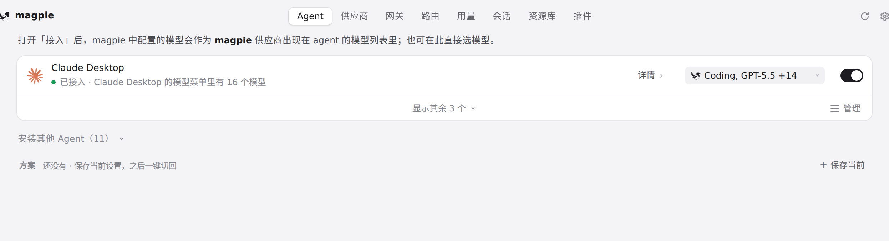
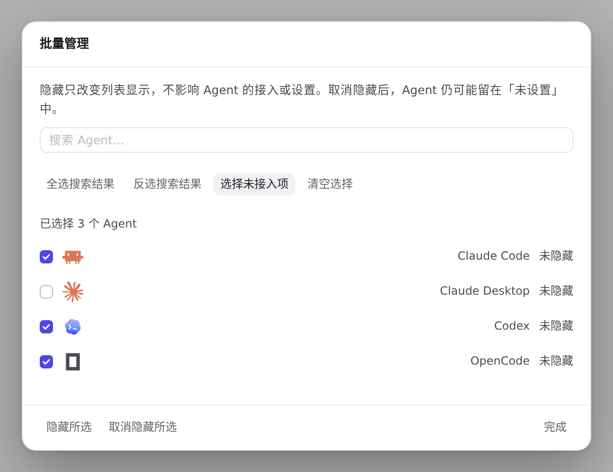
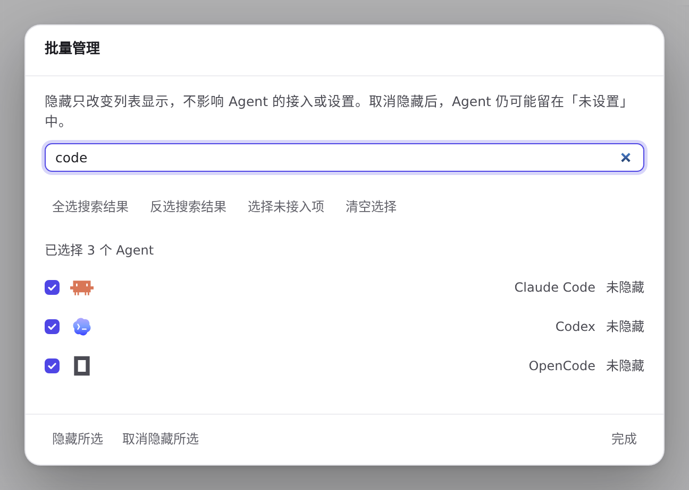
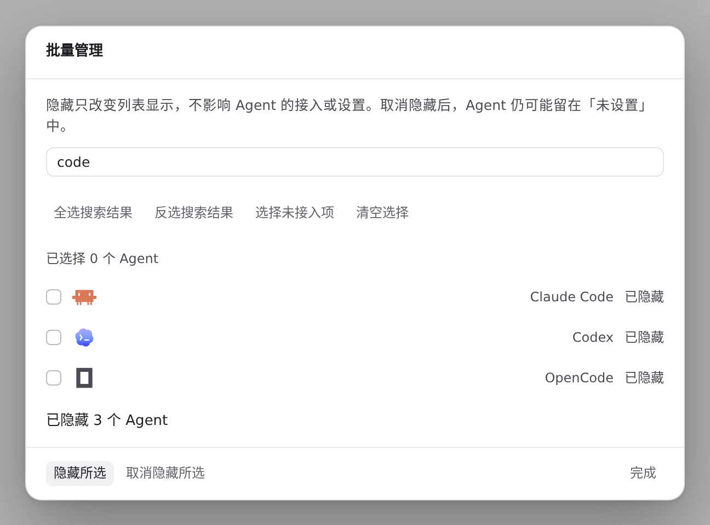
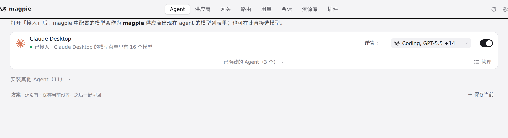

#1302 界面预览
commit 2a24d59 · 回到 PR · 在 Agent 列表页脚的折叠控件旁新增「管理」按钮，点开批量管理对话框：可按名称/ID 搜索、全选或反选搜索结果、选择未接入项、清空选择，并批量隐藏或取消隐藏所选 Agent，每行显示可见状态与已选数量。另外 Plugins 页的 npm 搜索结果改为原位更新，避免建议卡片在点击瞬间被重建。
红线是鼠标走过的轨迹，红色圆环是一次点击；底部文字是这一步在做什么。空格暂停，← → 逐段查看。

Agent 列表页脚的「管理」入口 · Agent 列表底部的页脚：折叠控件与新增的「管理」按钮
 Agent 列表页脚的「管理」入口 · 批量管理对话框：搜索框、选择按钮、已选数量与每行状态
Agent 列表页脚的「管理」入口 · 批量管理对话框：搜索框、选择按钮、已选数量与每行状态

批量选择与隐藏所选 · 选择后各行复选框与「已选择 N 个 Agent」

批量选择与隐藏所选 · 搜索后的行与已选数量

批量选择与隐藏所选 · 保存后对话框中的提示与各行状态

批量选择与隐藏所选 · 关闭对话框后的 Agent 列表